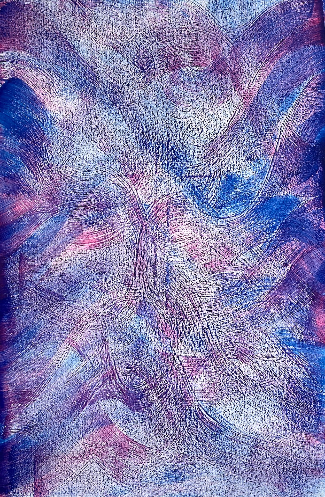
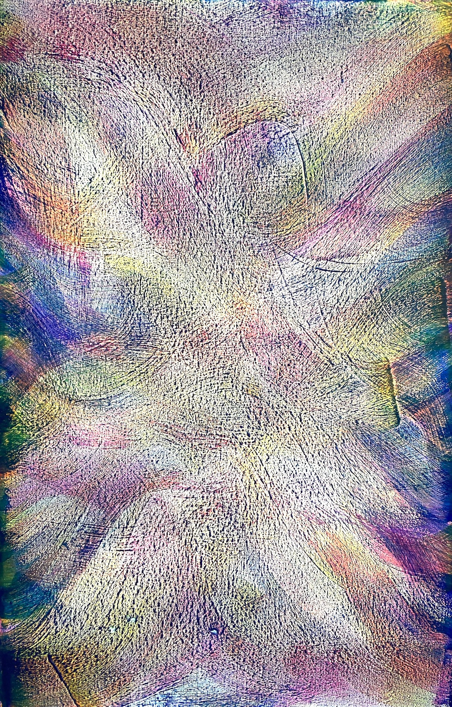
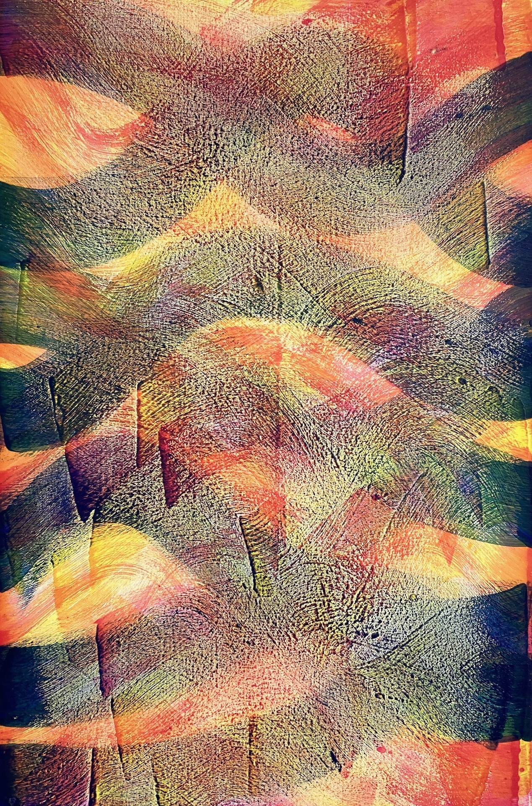
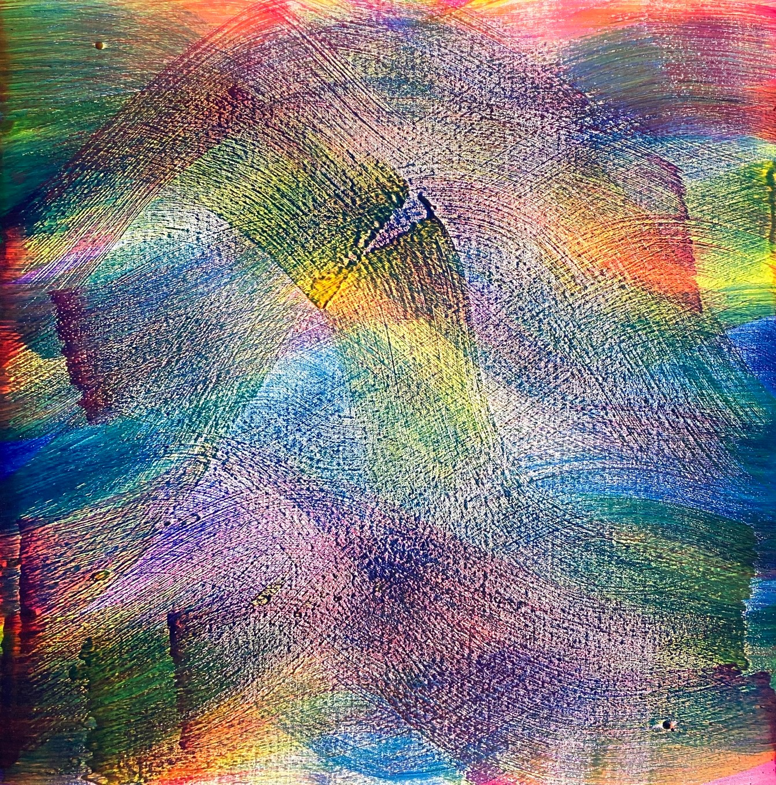
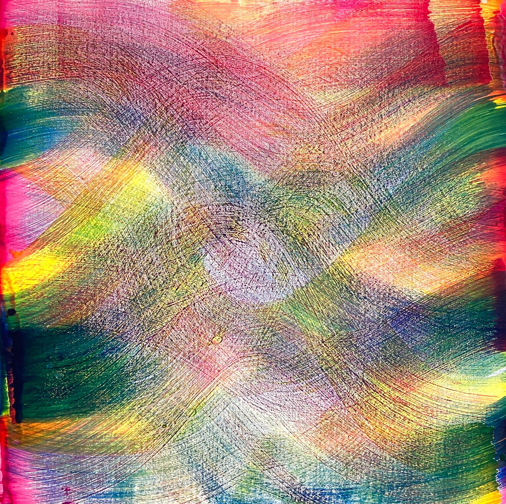
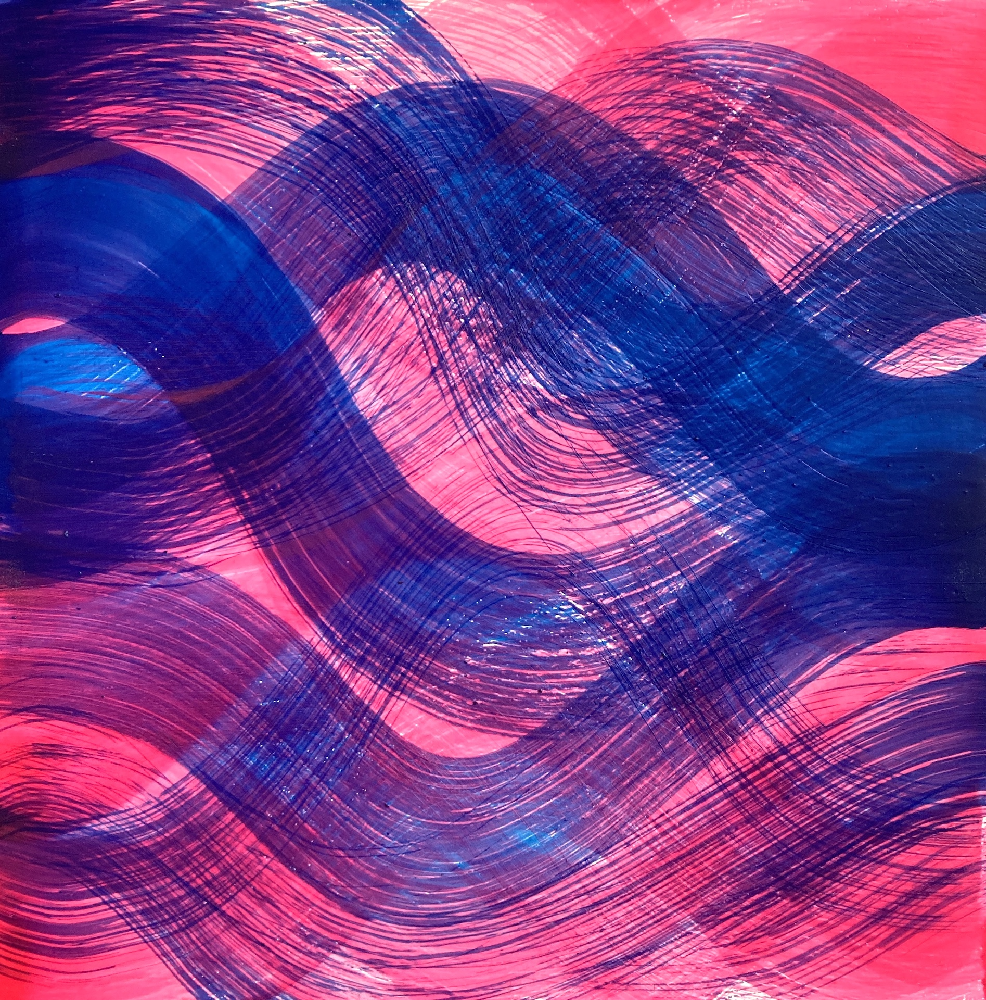
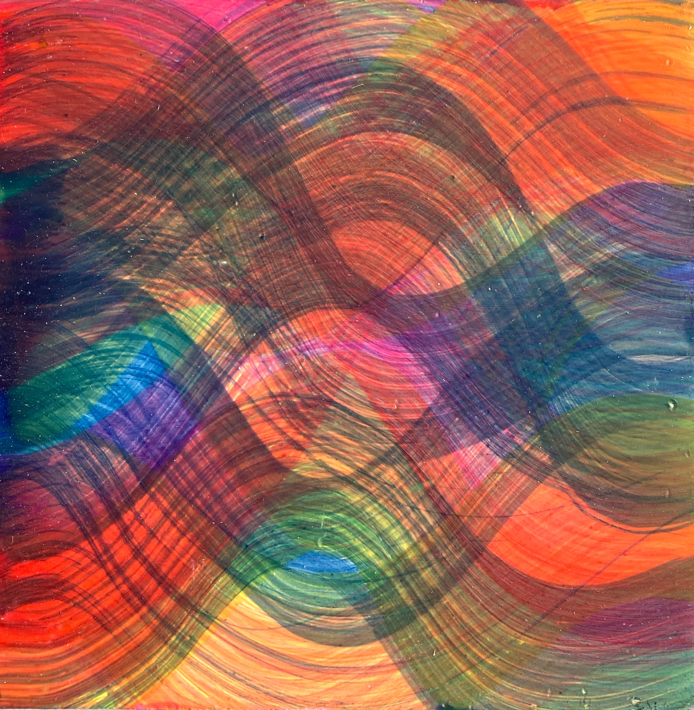

Nouvelle série / New Series !
Incertitudes en Mouvement

Incertitudes en Mouvement I encaustique sur toile / encaustic on canvas, 100x150 cm

Incertitudes en Mouvement II encaustique sur toile / encaustic on canvas, 100x150 cm

Incertitudes en Mouvement III encaustique sur toile / encaustic on canvas, 100x150 cm

Incertitudes en Mouvement IV encaustique sur toile / encaustic on canvas, 80x80 cm

Incertitudes en Mouvement V encaustique sur toile / encaustic on canvas, 80x80 cm
 Roubaix III encaustique sur panneau / encaustic on panel, 45x45 cm
Roubaix III encaustique sur panneau / encaustic on panel, 45x45 cm

Surf encaustique sur panneau / encaustic on panel, 45x45 cm.jpeg

Provincetown II encaustique sur panneau / encaustic on panel, 20x20 cm
 Mouvement I encaustique sur papier / encaustic on paper, 21x29,7 cm
Mouvement I encaustique sur papier / encaustic on paper, 21x29,7 cm